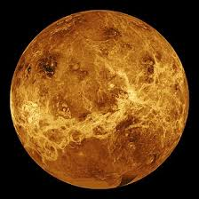

Venus: The Hottest Planet
Introduction

Venus is the second planet from the Sun and is Earth’s “twin” in size and composition. It is the hottest planet due to a runaway greenhouse effect. Venus shines as the Morning or Evening Star, being the brightest object after the Sun and Moon.
Formation & Evolution
Venus formed ~4.5 billion years ago from the protoplanetary disk. Initially, it may have had moderate temperatures, volcanism, and possibly surface water.
Increasing solar energy evaporated water, triggering a runaway greenhouse effect. Ultraviolet radiation broke water molecules apart, hydrogen escaped, oxygen reacted with rocks, and volcanic CO₂ trapped heat, creating today’s superheated Venus.
Key Characteristics
- Diameter & mass similar to Earth; hottest planet due to runaway greenhouse
- Surface temp: ~465°C (870°F), pressure ~92–93× Earth’s
- Atmosphere: 96% CO₂, sulfuric acid clouds
- Surface: vast volcanic plains, mountains, lava flows (~85%)
- Highlands: Aphrodite Terra, Ishtar Terra
- Slow retrograde rotation; one Venus day > one Venus year
- No natural moons; quasi-satellite: 2002 VE68
Venus Atmosphere
Venus’ dense atmosphere is mostly CO₂ (~96%) and nitrogen (~3.5%), with sulfur dioxide traces.
Lower Atmosphere: Crushing pressure and intense heat
Cloud Layer: Sulfuric acid clouds reflecting sunlight
Upper Atmosphere: Winds up to 360 km/h, circling the planet in days (super-rotation)
This layered atmosphere drives the runaway greenhouse effect.
Orbits & Motion
- Second planet from Sun, nearly circular orbit
- Retrograde rotation (spins backward)
- Rotation period: 243 Earth days; orbit: 224.7 days → day longer than year
- Dense atmosphere slows surface winds, but upper clouds circle planet in days at 360 km/h
Key Missions
- Mariner 2 (NASA, 1962): First successful flyby of another planet
- Venera Program (USSR): First soft landings and surface images (Venera 7, 9, 10)
- Magellan (NASA): Radar mapping of the entire surface
- Venus Express (ESA): Studied atmosphere and ionosphere
- Akatsuki (JAXA): Studying atmospheric dynamics since 2015